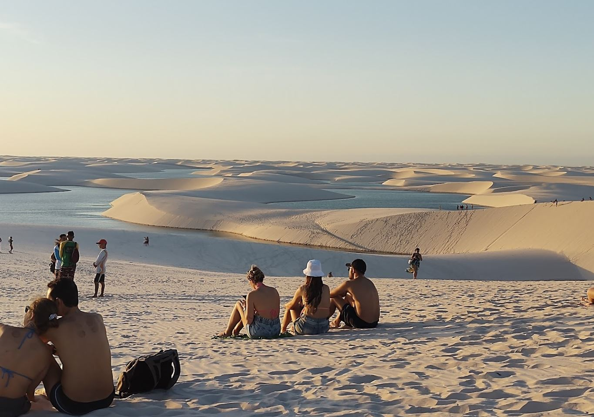

Lençóis Maranhenses
Un lugar mágico entre dunas y lagunas cristalinas.
10/10⭐
Mi experiencia fue increíble. Caminar entre las dunas y encontrar lagunas de agua clara fue algo único. Es un destino perfecto si buscas desconectarte del ruido y conectar con la naturaleza.